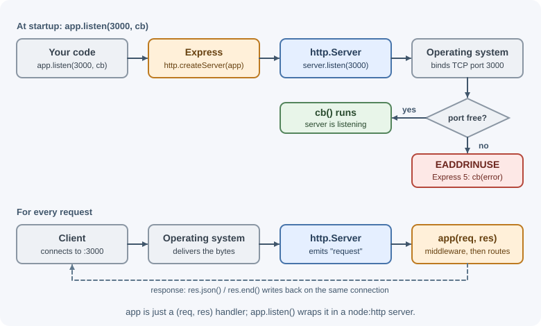
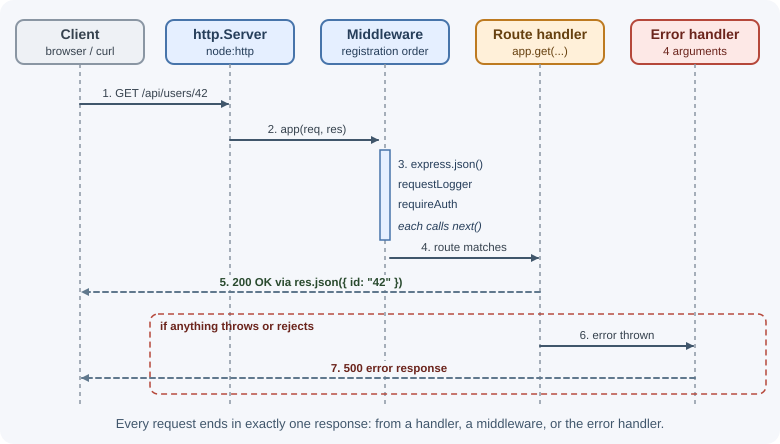

Getting Started with Express¶
Express is a minimal web framework for Node.js. It sits on top of the
built-in node:http module and adds two things that almost every server
needs: routing (matching a method and URL to code) and middleware
(reusable steps that run for each request). This lesson sets up a first
Express 5 project and explains what happens when a request arrives.
Why it matters¶
You can build a server with only the http module,
but you then write the same plumbing by hand: parsing URLs, matching paths,
reading request bodies, setting headers, and sending JSON. Express removes
that repetition while staying small and unopinionated. It does not decide
your folder structure, database, validation library, or authentication
method, so it is a good framework for learning how backends really work.
Express is also one of the most widely used Node.js frameworks. Many tutorials, middleware packages, and production services assume it, and frameworks such as NestJS can run on top of it.
Real-world usage¶
- PayPal's first Node.js attempts used Express for routing. In a 2013 engineering post the team wrote that it liked "the ubiquity of express" but found that Express's non-prescriptive style "didn't scale well in multiple development teams". It responded by building kraken.js, "a convention layer on top of express", so many teams could share one structure (PayPal Technology blog).
- NestJS, a framework for large TypeScript back ends, uses Express as its default HTTP server under the hood and can be switched to Fastify (NestJS documentation). What you learn about Express explains what a NestJS app does underneath.
- Auth0 publishes a quickstart for protecting Express.js API endpoints
with JWT access tokens. Its
express-oauth2-jwt-bearerSDK is configured as Express middleware (Auth0 documentation). - Stripe's webhook documentation includes Express-specific advice: the
webhook route must be registered before
app.use(express.json())because "Express applies middleware in order" (Stripe documentation).
Popular tools and providers: Fastify, Koa, Hono, and NestJS are the frameworks most often compared with Express; error-tracking and identity providers such as Sentry and Auth0 ship Express integrations.
How it works¶
What Express adds to Node.js¶
| Concern | Plain node:http |
Express |
|---|---|---|
Match GET /users/42 |
Parse req.url and compare strings yourself |
app.get("/users/:id", handler) |
| Read route values | Split the path manually | req.params.id |
| Read query strings | Parse with URL |
req.query |
| Parse a JSON body | Collect chunks, JSON.parse, handle errors |
app.use(express.json()) then req.body |
| Send JSON | Set status, header, stringify, end() |
res.status(201).json(data) |
| Shared steps (logging, auth) | Call helpers in every handler | Middleware with app.use() |
| Errors | Try/catch everywhere | Central error-handling middleware |
An Express application object (app) is itself a request handler function
with the signature (req, res). app.listen() simply creates a
node:http server with app as its handler and starts listening.

The request-response cycle¶

Every request must end in exactly one response: a handler sends it, a middleware sends it (for example, rejecting an unauthenticated request), or the error handler sends it. If nothing responds, the client waits until it times out.
Express 5 compared with Express 4¶
Express 5 is the current major version and is what npm install express
installs. Most Express 4 code still works, but several behaviors changed.
You will meet both versions in tutorials and older projects.
| Topic | Express 4 | Express 5 |
|---|---|---|
| Node.js version | Very old versions supported | Node.js 18 or newer |
Rejected promise in an async handler |
Not caught; you must call next(err) |
Passed to the error handler automatically |
| Wildcard paths | "*" |
Named: "/*splat" (or "/{*splat}" to include /) |
| Optional segments | "/users/:id?" |
"/users{/:id}" |
req.body with no parser |
{} in many setups |
undefined |
express.urlencoded() extended default |
true |
false |
| Default query parser | "extended" (qs, nested objects) |
"simple" (node querystring) |
express.static dotfiles |
Served unless configured | Ignored by default |
| Removed APIs | — | app.del(), req.param(), res.sendfile(), res.json(obj, status), res.send(status), res.redirect("back") |
res.status(code) |
Accepted odd values | Throws unless the code is a valid integer (100–999) |
app.listen errors |
Thrown | Passed to the listen callback |
The Express 5 migration guide lists every change.
When to use and when not to use¶
Use Express when:
- You are building a JSON API, a backend-for-frontend, or a small server-rendered site in Node.js and want a small, well-known core.
- You need a particular integration: most Node.js libraries and SaaS SDKs for authentication, error tracking, and logging ship an Express version.
- The team is learning backend fundamentals. Express hides little, so routing, middleware, and error handling stay visible.
- You want to start simple and add structure as the service grows.
Consider something else when:
- Many teams share one codebase and need enforced conventions. An opinionated framework such as NestJS, or a convention layer of your own as PayPal built, stops every team inventing its own structure.
- Validation and serialization speed are central to the service. Fastify builds a schema-based approach into its core.
- The code must run on edge or serverless runtimes that use Web Standard
RequestandResponseobjects. Hono targets those runtimes. - The work is mostly CPU-bound, such as image processing. The bottleneck is Node.js's main thread, not the framework; see worker threads, child processes, and cluster.
| Situation | Good fit | Why |
|---|---|---|
| Small or medium JSON API, team knows JavaScript | Express | Minimal core, huge ecosystem |
| Large organization, many teams, TypeScript | NestJS (on Express or Fastify) | Modules, dependency injection, enforced conventions |
| Throughput-critical API with strict schemas | Fastify | Schema-based validation and serialization |
| Edge functions or several JavaScript runtimes | Hono | Web Standards API; runs on many runtimes |
| Minimal core built only from async middleware | Koa | No middleware bundled in the core |
Practical examples¶
Create a project¶
mkdir tasks-api
cd tasks-api
npm init -y
npm install express
Open package.json and set "type": "module" so Node.js treats .js
files as ES modules (import/export). Add scripts for development and
production:
{
"name": "tasks-api",
"version": "1.0.0",
"type": "module",
"scripts": {
"dev": "node --watch server.js",
"start": "node server.js"
},
"dependencies": {
"express": "^5.1.0"
}
}
node --watch restarts the process whenever a file it loaded changes.
Older projects use the nodemon package for the same job
(npx nodemon server.js). Both are development tools only; production
uses a plain node server.js under a process manager or container.
A first server¶
// server.js
import express from "express";
const app = express();
// Parse JSON request bodies into req.body
app.use(express.json());
// A route: method + path + handler
app.get("/health", (req, res) => {
res.json({ status: "ok" });
});
app.post("/tasks", (req, res) => {
const { title } = req.body ?? {};
if (!title) {
return res.status(400).json({ error: "title is required" });
}
res.status(201).json({ id: 1, title });
});
// PORT usually comes from the environment in hosted platforms
const PORT = Number(process.env.PORT) || 3000;
app.listen(PORT, (error) => {
// Express 5 passes server errors (such as a busy port) to this callback
if (error) {
console.error("Server failed to start:", error.message);
process.exit(1);
}
console.log(`Listening on http://localhost:${PORT}`);
});
Run it with npm run dev and try it:
curl http://localhost:3000/health
# {"status":"ok"}
curl -X POST http://localhost:3000/tasks \
-H "Content-Type: application/json" \
-d '{"title":"Write notes"}'
# {"id":1,"title":"Write notes"}
app.listen returns a Node.js server¶
const server = app.listen(PORT);
server.on("error", (error) => {
if (error.code === "EADDRINUSE") {
console.error(`Port ${PORT} is already in use`);
process.exit(1);
}
throw error;
});
// Later, for graceful shutdown: stop accepting new connections
process.on("SIGTERM", () => {
server.close(() => process.exit(0));
});
EADDRINUSE means another process already listens on that port, often an
older copy of your own server. Because app is just a handler, you can
also create the server yourself, which is useful when another library
(such as a WebSocket server) needs the same http.Server:
import { createServer } from "node:http";
const server = createServer(app);
server.listen(PORT);
Tip
Keep the Express app (app.js) separate from the code that starts it
(server.js). Tests can then import the app without opening a port.
See project structure.
Alternatives you will hear about¶
| Framework | Style | Strengths | Trade-offs |
|---|---|---|---|
| Express | Minimal, middleware-based | Huge ecosystem, simple mental model | You choose and assemble most pieces |
| Fastify | Plugin-based, schema-first | High throughput, built-in JSON schema validation and serialization | Different plugin and lifecycle model to learn |
| Koa | Minimal, async middleware |
Small core from the original Express authors | No built-in router or body parser |
| NestJS | Opinionated, TypeScript, dependency injection | Structure for large teams, modules, decorators | More concepts and boilerplate; runs on Express or Fastify underneath |
| Hono | Web Standards Request/Response |
Very small; runs on Node.js, Bun, Deno, and edge runtimes | Younger ecosystem than Express |
Learning Express first makes the others easier: they all solve the same problems of routing, middleware, validation, and error handling.
Best practices¶
- Pin Express to a major version (
^5.x) and read the migration guide before upgrading an Express 4 project. - Read configuration such as
PORTfrom environment variables; see process, environment variables, and configuration. - Register body parsers and other global middleware before routes, and the error handler last.
- Always send a response or pass control onward with
next(). - Split
app.js(configuration) fromserver.js(listening) early. - Use
node --watchornodemononly in development.
In production¶
- Port already in use on deploy. Symptom: the new instance exits at
once and the process manager restarts it in a loop. Detect: the log
line
listen EADDRINUSE: address already in use :::3000(with the listen callback above:Server failed to start: listen EADDRINUSE...). Cause: an old copy of the server is still running, or two services got the samePORT. Fix: shut down gracefully onSIGTERMand take each instance's port from the environment. - Requests that never finish. Symptom: clients time out and the
reverse proxy returns
504 Gateway Timeout. Detect: proxy logs report an upstream timeout, and your request logger records requests that start but never log afinish. Cause: a middleware or handler branch that neither responds nor callsnext(). Fix: make every branch respond or callnext(), and test each branch. req.bodyisundefinedafter upgrading to Express 5. Symptom: 500 errors on POST routes. Detect:TypeError: Cannot destructure property 'title' of 'req.body' as it is undefined.Cause: Express 4 defaultedreq.bodyto{}; Express 5 leaves itundefinedwhen no parser ran. Fix: register the right parser before the route and readreq.body ?? {}, or validate the whole body.- Crash at startup after the upgrade. Symptom: the app never starts.
Detect:
PathError: Missing parameter name at index 1: *; visit https://git.new/pathToRegexpError for info. Cause: Express 4 path syntax such as"*"or":id?". Fix: use"/*splat","/{*splat}", or"{/:id}"; the migration guide lists codemods that automate several of the changes. - The process dies on an error thrown in a timer or event callback.
Symptom: every in-flight request on the instance fails at once and the
instance restarts. Detect: an
uncaughtExceptionstack in the logs and rising restart counts in PM2 or Kubernetes. Cause: the error was thrown outside the promise chain Express watches. Fix: use promise-based APIs or pass the error tonext(err); see error handling in Express.
Important terminology¶
- Application (
app): The object returned byexpress(); it holds settings, middleware, and routes, and acts as the request handler. - Route: A combination of an HTTP method, a path pattern, and one or more handler functions.
- Handler: A function
(req, res, next)that processes a request. - Middleware: A function that runs during the request-response cycle
and either responds or calls
next(). - Request-response cycle: Everything that happens between Express receiving a request and the response being sent.
- Port: The number a server listens on so the operating system can deliver network traffic to it.
Common mistakes and misconceptions¶
- Express is not part of Node.js; it is a separate npm package.
- Forgetting
"type": "module"and then usingimportcauses a syntax error (or requires.mjsfiles). - Reading
req.bodywithout registeringexpress.json()givesundefinedin Express 5. - Copying Express 4 wildcard routes such as
app.get("*", ...)into an Express 5 app throws a path syntax error at startup. - Running two copies of the server on the same port fails with
EADDRINUSE; it is not a bug in Express. - Express does not validate input, authenticate users, or structure your project for you; those are deliberate choices you add.
Revision questions¶
- What does Express add on top of the
node:httpmodule? - What does
app.listen()return, and why might you need it? - Name three behavior differences between Express 4 and Express 5.
- Why must every request end with exactly one response?
- What does
node --watchdo, and why is it not used in production? - Why is it useful to separate
app.jsfromserver.js?